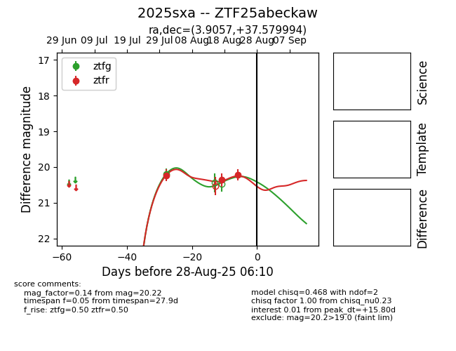

Target 2025sxa at 2025-08-28 09:52, see:
FINK: fink-portal.org/ZTF25abeckaw
Lasair: lasair-ztf.lsst.ac.uk/objects/ZTF25abeckaw
ALeRCE: alerce.online/object/ZTF25abeckaw
TNS: wis-tns.org/object/2025sxa
YSE: ziggy.ucolick.org/yse/transient_detail/2025sxa
alt names
ZTF25abeckaw (ztf,fink)
2025sxa (tns,yse)
coordinates:
equatorial (ra, dec) = (3.9057,+37.57999)
galactic (l, b) = (115.1260,-24.74830)
photometry
last ztfg=20.20, ztfr=20.46
1 ztfg, 4 ztfr detections
